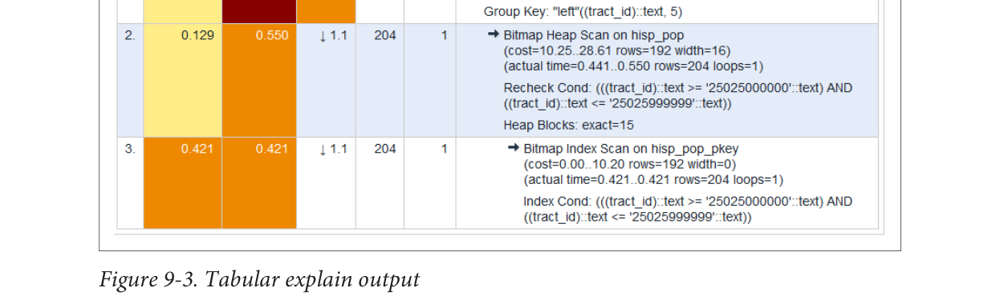

thời gian độc quyền (thời gian tiêu tốn bởi bước cha) và thời gian bao gồm (thời gian của bước cha cộng với các bước con của nó).

Mặc dù bảng HTML trong Hình 9-3 cung cấp thông tin tương tự như đầu ra văn bản thuần, nhưng mã màu và phân tách các con số giúp dễ dàng nhận thấy nơi mà các ước lượng của chúng ta không chính xác. Ví dụ, màu vàng, nâu và đỏ làm nổi bật các khu vực mà bạn nên tập trung.
Cột số hàng x là số hàng dự kiến, trong khi cột số hàng cho thấy số hàng thực tế. Điều này cho thấy rằng mặc dù bước cuối cùng của chúng tôi dự kiến 192 bản ghi, nhưng nó chỉ nhận được một bản, và quét bitmap đã trả về 203 kết quả dương giả bị bắt bởi việc kiểm tra lại. Các ước lượng hàng không chính xác thường xuất phát từ thống kê bảng đã lỗi thời. Luôn là một ý tưởng tốt để chạy phân tích trên các bảng trước một truy vấn dài để cập nhật thống kê.
Thu thập thống kê về các câu lệnh
Bước đầu tiên trong việc tối ưu hóa hiệu suất là xác định các truy vấn nào là nút thắt cổ chai. Một tiện ích mở rộng giám sát hữu ích để nắm bắt các truy vấn tốn kém nhất của bạn là pg_stat_statements. Tiện ích mở rộng này cung cấp các chỉ số về các truy vấn đang chạy: truy vấn nào được chạy thường xuyên nhất và mỗi truy vấn mất bao lâu. Nghiên cứu các chỉ số này sẽ giúp bạn xác định nơi bạn cần tập trung nỗ lực tối ưu hóa truy vấn của mình.
pg_stat_statements được đóng gói với hầu hết các bản phân phối PostgreSQL nhưng phải được nạp trước khi khởi động để khởi động quá trình thu thập dữ liệu của nó:
- Trong
postgresql.conf, thay đổishared_preload_libraries = ''thànhshared_preload_libraries = 'pg_stat_statements'. - Trong phần tùy chọn tùy chỉnh của
postgresql.conf, thêm các dòng:
166|Chương 9: Tinh chỉnh hiệu suất truy vấn